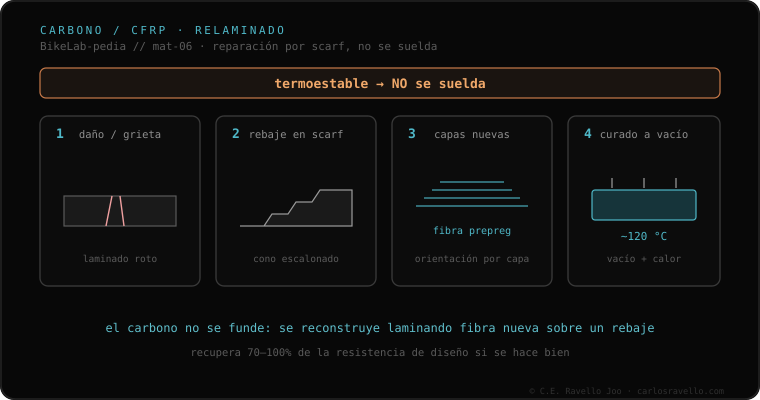

La fibra de carbono no se suelda. Es un material termoestable: no se funde para volver a unirlo como un metal. Lo que existe es una reparación distinta, por relaminado, que hace un taller especializado en composites (no un soldador): se rebaja la zona dañada en forma de cono o rampa (scarf), se aplican capas nuevas de fibra y se cura con calor y vacío (~120 °C para prepreg). La literatura reporta recuperaciones de 70%–100% de la resistencia de diseño con un scarf bien hecho.
Si tu cuadro es de carbono, lo primero que cambia es a quién se lo llevas: no es asunto de soldadores.
El metal se suelda porque se funde: el calor lo lleva a líquido y, al enfriar, los tubos quedan unidos. El carbono no juega así. Es un material termoestable —una matriz de resina curada que sujeta las fibras— y eso significa que no se funde para volver a unirlo. No hay temperatura que lo "rederrita" en una unión nueva. Por eso decir "soldar el carbono" es un error de categoría: lo que ese material admite es otra cosa.
Esa otra cosa es la reparación por relaminado, y la hace un taller especializado en composites, no un soldador. Se rebaja la zona dañada en forma de cono o rampa —el scarf—, se aplican capas nuevas de fibra (prepreg o laminado húmedo) y se cura con calor y vacío, del orden de 120 °C para prepreg. La literatura de reparación de composites reporta recuperaciones de entre el 70% y el 100% de la resistencia de diseño con un scarf bien hecho.

El carbono encaja en este clúster por contraste: frente a los metales que se funden o se unen con aporte —la lógica de TIG, MIG y brazing—, aquí no hay cordón ni fusión. Encaja también con el modo en que cada material acumula daño con el uso (la fatiga por material) y con las preguntas que conviene hacer antes de dejar el cuadro: la primera, en carbono, es si quien lo va a tocar es un taller de composites o un soldador.
Si dudas de un daño o de quién debe tocarlo, mándanos el caso. Diagnóstico real, sin venderte nada. Escríbenos por WhatsApp
No. La fibra de carbono es termoestable: no se funde para volver a unirlo como un metal. Lo que existe es una reparación distinta, por relaminado, que hace un taller especializado en composites, no un soldador.
Es el relaminado: se rebaja la zona dañada en forma de cono o rampa (scarf), se aplican capas nuevas de fibra (prepreg o laminado húmedo) y se cura con calor y vacío, del orden de 120 °C para prepreg. La literatura reporta recuperaciones de 70% a 100% de la resistencia de diseño con un scarf bien hecho.
Es una señal de alarma. Ese parche queda rígido, pesado y peligroso. La reparación real es por scarf y la hace un taller de composites, no un soldador.
© 2026 BikeLab Studio. Contenido bajo CC BY 4.0: puedes copiarlo, traducirlo y publicarlo, incluso con fines comerciales. La cita es obligatoria. Sin atribución, la licencia se revoca de forma automática (CC BY 4.0, §6.a) y el uso pasa a ser una infracción de derechos de autor: solicitamos la retirada del contenido y su desindexación. · Diseño y propiedad: Carlos Ravello Joo